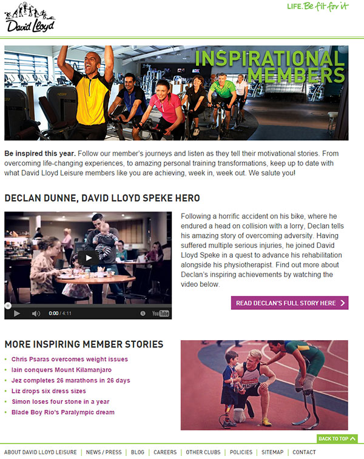

Luisa Gottardo
David Lloyd Leisure Landing Pages
The brief
Create landing pages on a variety of topics, which will give the users more information about any given product or service, and is linkable throughout the website.
What I did
I gathered relevant information on each product and service, through both internal and external research, as well as liaising with relevant key stakeholders. I wrote engaging copy to ensure that the page provided all information necessary. I worked closely with the Digital Designer to source the imagery, and I created the design and structure of the pages. I also found all areas of the website where the landing page could be linked to.
Tracking how well my copy performs is an integral part of what I do. Some statistics on past landing pages are:
- Discover more landing page: 5060 unique page views. Just under 1 minute spent on the page.
- Immersive landing page: 1297 new users viewed the page. 4000 unique page views. Over two mins spent on the page.
- BILT landing page: 841 unique page views, nearly three minutes spent on the page.
